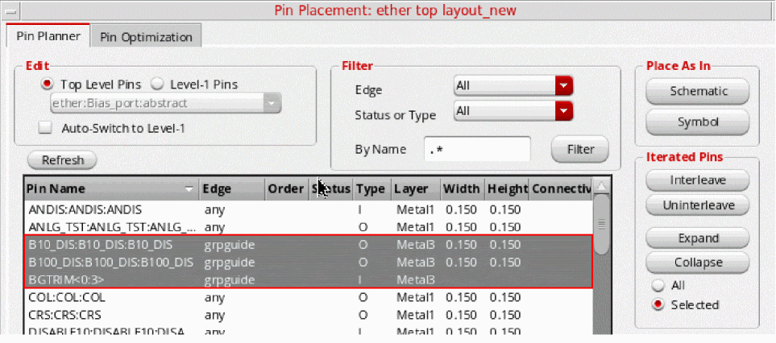
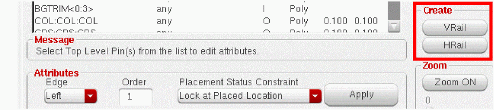

Converting a Pin into a Rail
-
From the layout window menu bar, choose Floorplan – Pin Planner.
The Pin Placement form is displayed. -
Choose Unplaced from the Status or Type drop-down list.
 -
Select a pin from the pin table.
To select multiple pins to be converted to a rail, hold down theCtrlkey and select the pins. - Choose an edge from the Edge drop-down list.
- Click Apply. The pin is placed on the boundary. If you have selected multiple pins, they will all be placed on the boundary.
-
Select the pin in the layout and do one of the following:
- Click HRail to convert it into a horizontal rail.
-
Click VRail to convert it into a vertical rail.
- (Optional) Use the Constraint Manager Assistant to view the alignment constraints on the rail.
Converting a Rail into a Pin
To convert a rail back into a pin:
-
From the layout window menu bar, choose Floorplan – Pin Planner.
The Pin Placement form is displayed. - In the layout window, select the rail you want to change.
-
In the Pin Placement form, click unHRail or unVRail as required.
The rail is converted back into a pin and returned to its original size and edge, regardless of the railing direction.
Related Topics
Planning Placement of Top-Level and Level-1 Pins
Return to top